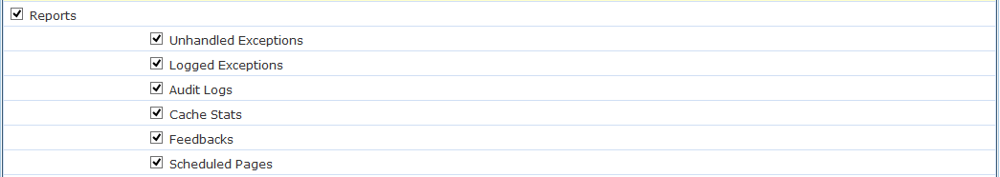
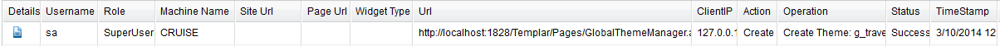

This document explains the configuration and usage of Templar audit log feature.
If you have comments /queries about this documentation, email them to:
1. Introduction
2. Audit Log
Manage Access Rights of Audit Log Report:
3. Audit Log Report
Features:
4. Sample Audit Logs
Audit logging feature keeps track of all changes done in Templar. It does this by recording all state change actions (such as who logged in and when) and storing this information in the form of a log (This feature does not impact site operations in preview and live mode). This log is visible to SuperUser and can be allowed for viewing by other roles as per permissions. This document gives an overview of settings and supported flow of audit logging feature.
Audit Log report is displayed under the Reports tab, where you can view all auditing log entries. Below screenshot shows the Audit logs report link:
The default behavior only allows audit log report to be viewed by SuperUser, however if required other user roles can be given permission to view this report.
User of role SuperUser has default access to Audit Log report. Access rights of Audit Log report can be handled from Admin -> Manage tabs page. On Manage tabs, under Reports section Audit Log report is listed.
A user of a role having access to Manage tabs can change access rights of other users to this report. Simply check/uncheck of Audit Logs check box as shown in below screenshot serves the purpose:

Below is a sample audit log reports view:
The logs displayed under this report are based on role of the logged in user. If user of role SuperUser views the report then all the logs are displayed. User of role Admin can only view logs which are logged under role of Admin and below. And similarly user of role User is allowed to view logs under role of User.
Under this report there are two types of logs, single operation logs and multi-operation logs. Single operation log is created when a single user action corresponds to a single action in Templar application e.g. user login. On the other hand when a single user action on the Admin interface triggers multiple backend actions e.g. a site creation in that case all related logs for that action are grouped under a single entry. Single operation logs are listed with icon and multi-operation logs are listed with icon in the first column of the report. Multi-operation logs are one which have sub logs under them and which can be seen by clicking the expand icon as shown above.
At a high level there are a total of 6 actions which are captured using audit log feature. The actions are Authenticate, Logout, Create, Update, Publish and Delete. The sample logs generated when any of the action is performed are shown later in this document.
Authenticate: When user is trying to login using his Templar credentials one entry is logged and marked as Authenticate action, if authentication is successful then status is Success and if it fails that entry is recorded and marked with ‘Error’ status.
Create: When any Templar entity is created one entry is logged with Create action. The Templar entity could be Site, Page, Widget-Instance, Template, Global Culture, Global Theme, Widget etc.
Delete: Whenever any Templar entity is deleted a log is recorded for that delete action with corresponding status.
Logout: When user logs out of Templar admin application one entry is logged under this action.
Publish: Publish action is logged when any Templar entity is Published.
Update: Similar to Create action if any Templar entity is updated the log is recorded with Update action.
To know under which credentials the actions are performed, audit log report logs the name and the role of the user.
Machine name and Client IP of the machine on which Templar is deployed is also logged under this report.
Site Url is logged if any site specific operation like update site, add/delete/update site level entity, add/delete/update page, publish etc. is performed.
Similarly Page Url is logged in case any page specific operation is performed. However when any widget is added/deleted/updated on page corresponding Base Widget name is logged under Widget Type.
Site Url, Page Url and/or Widget Type would be empty in case performed operation is not site, page and/or widget specific respectively e.g. In case of Global Culture, Global Theme, Site Templates, Manage Widget etc. site url, page url and widget type would be empty.
The URL logged is the relative url when that particular operation is performed.
The purpose of this field is to brief about the action.
The status of the action could either be Success or Error. In case error occurs report tries to update Operation column with brief explanation of error.
Audit Log report provides a range of search fields. One can search the report on Username, Status, ID, Role, Action, Date range, Machine Name, Site Url, Page Url or any combination of these fields. Role is a textbox where valid inputs are Superuser, Admin and User or as per custom configured roles. Similarly Action has six predefined values as explain above and they are Authenticate, Create, Delete, Logout, Publish and Update.
When user logs in or logs out, audit log report records logs as shown below:
On successful login an entry is added as shown above with username, role of user, action (Authenticate) and status (Success). Similarly when user logs out of Templar and entry gets added with user logged out as value of operation section.
In case user tries to login with invalid credentials that entry is added with the username which is used to login, status (Error) and role is set to empty. Below is a sample log of login with invalid credentials:
As authenticate action has no further details to show is comes under single log entry.
When a site is created from already available template following entries are logged:
When a site is created using a template following operations are performed:
When page is created below operations are logged:
When a new page is added to existing site Create Page action is performed and an entry is logged with Create action and Create Page operation.
When global level theme is created below operations are logged:

When a global theme with theme name ‘g_Travel’ is added an entry is created with details of username, role or user, Create as action and name of theme in Operation.
When global level culture is created below operations are performed, which are grouped under Add Global Culture.
On creating global culture logs are created for following entities:
When a template is created from an existing zip file site below sample entries are logged for this operation:
When a template is created from an existing zip file following operations are performed and logged:
When widget is created, below is the logged sample entry:
When a SampleWidget is added to widget list an entry is added with details of username, role, Create as action and name of widget in operation.
Audit log provides the diff manager functionality to differentiate between logs of theme with updated version. After updating theme second time, below is the logged sample entry:
Audit log provides the diff manager functionality to differentiate between logs of culture with updated version. After updating culture, below is the logged sample entry:
Audit log provides the diff manager functionality to differentiate between logs of page with updated version. After updating page, below is the logged sample entry:
Note: The Audit Logging cannot be turned off by using any switches or other techniques.